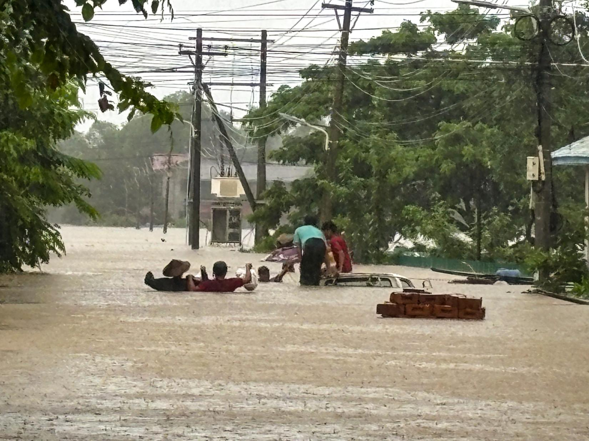

Rivers and lowlands
Water flows towards lower ground. When rivers rise beyond their banks, nearby floodplains can become covered by water.
Why location matters
Rain falling upstream can contribute to flooding farther downstream. Local elevation and drainage also influence where water collects, so communities within the same region may face different conditions.